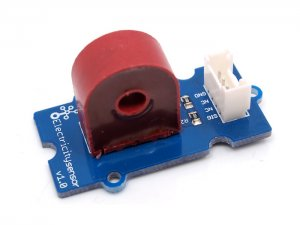
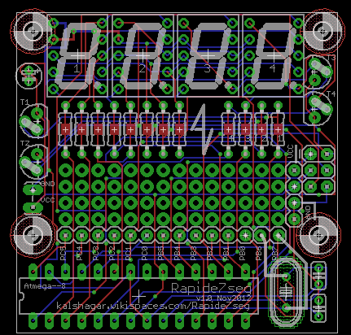
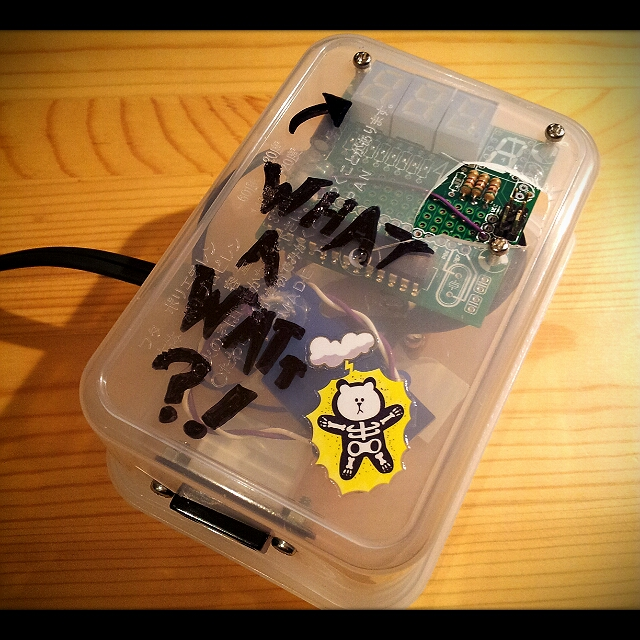
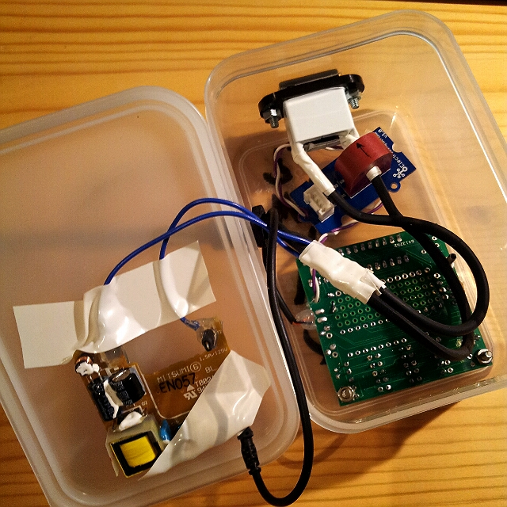
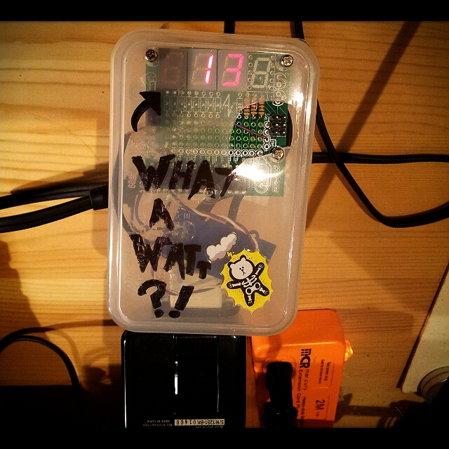

Foreword and purpose

Basically, this is just a clone of the excellent project done by the 2 following students Cliff Jao and Xi Guo. Thanks to them for sharing : http://instruct1.cit.cornell.edu/courses/ee476/FinalProjects/s2008/cj72_xg37/cj72_xg37/index.html
Idea is to have a small plug that tells you how much power you are currently drawing from the wall. No need of PC interface, no need of crazy design, no need of sub-millisecond precision.
It will use the board for 7segments
Rapide7seg I made recently (it has on a ATmega xx8), and a current sensor from Seeedstudio (
buy /
doc wiki). That should do the trick, right ?
Result : working not bad at all! According my tests it's slightly underestimating the consumption, but nothing crazy. Didn't found the reason why, but the box is still reprogrammable because of the accessible ISP so in case one day...
Schema
Nothing formal : just plug the current sensor before the output plug (wire it to GND and ADC5) to the ATmega88, use the formula in the
seeedstudio wiki and use the Rapide7seg.h to display. Very straightforward.
Code
All is here :
http://code.google.com/p/alanarduinotools/source/browse/trunk/#trunk%2FAtmegaxx8%2FWhatAWatt

The main loop just take care of initializing the different parts and then displays the value on the 7seg (using POV, you can drive just one 7 seg at a time).
The real interresting job is done with a timer interrupt : TIM0 a 8 bit counter running on a 8MHz CPU with a 256 prescaler will timeout every 8ms or so.
Clock
|
8,000,000
|
|
Hz
|
Prescaler
|
256
|
31,250
|
Hz
|
Timer bits (till overflow)
|
256
|
122
|
Hz
|
Overflow period
|
1s
|
8
|
ms
|
So you have your TIM0 overflow interrupt running at 122 Hz (means triggered every 8ms). According
Mr Shannon , that should be enough to find local maximum of a sine at 50-60 Hz AC (according Japan power company). So read a bunch of values, make an average and there you go, you have your max AC over the period. You can then average it with a few other values and you'll have an acceptable estimation of you AC consumption.
Use then the
seeedstudio wiki to get the current equivalent, multiply by the AC voltage and you get the power (Watt) consumption.
Pictures

Tada ! ... yes I know the hole for the ISP was a big fail. Once again, blunt force is not
the solution.

The box opened with the wallwart internals on the left and the board back on the right.

The box showing 13W consumption
Links and inspiration